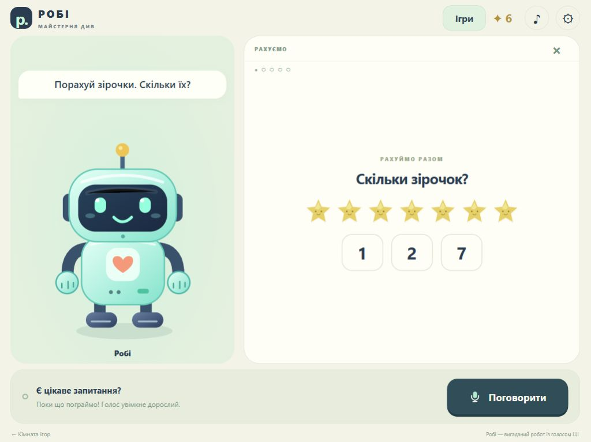

Talk, at your pace.
Walkie-talkie voice with Realtime Mini. Hold to speak, release to listen. A tap mode and full Realtime 2.1 are available in parent settings.
A ROBOT FOR CURIOUS LITTLE MINDS
Hold the microphone. Ask in Ukrainian. Count the stars, discover how things work, and explore one thing together.
Self-hosted · Built for landscape iPad · Parent-controlled
ONE SCREEN. ONE THING TO EXPLORE.
Game menus disappear when an activity starts. A new question clears the old picture. The robot's words and the current activity stay together.

Walkie-talkie voice with Realtime Mini. Hold to speak, release to listen. A tap mode and full Realtime 2.1 are available in parent settings.
Count to ten, find colors and shapes, and solve simple riddles. Every prepared question has matching Ukrainian narration.
Ask a current educational question or check tomorrow's weather for a named city. Search uses selected sources; weather has its own matching forecast card.
MADE TO BE RUN BY A PARENT
Plain HTML, CSS and JavaScript. A small Node.js server. Password-protected access, server-side provider keys and a configurable monthly app budget. Safari can install Робі on the Home Screen with its own robot icon.
The app does not save raw audio, transcripts, search questions or city lookups. Providers still process requests. Parent authorization and provider Zero Data Retention approval are separate settings.
A supervised family prototype. AI answers can be wrong or unsuitable, forecasts can change, and Mini can make language mistakes. Review provider requirements before enabling children's voice.
Read the architecture & privacy notes ↗YOUR SERVER. YOUR PLAYROOM.
Try the prepared games without an API key.
Add paid conversation when you are ready.